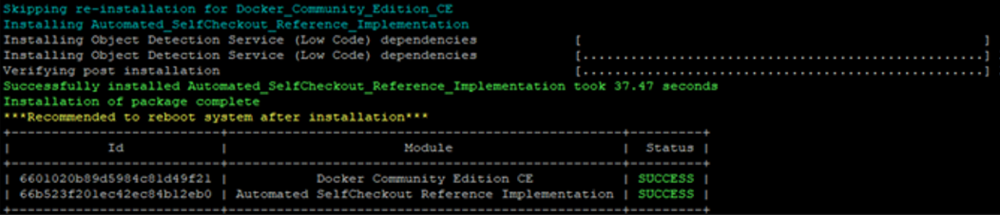
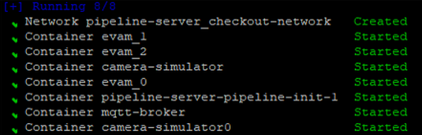
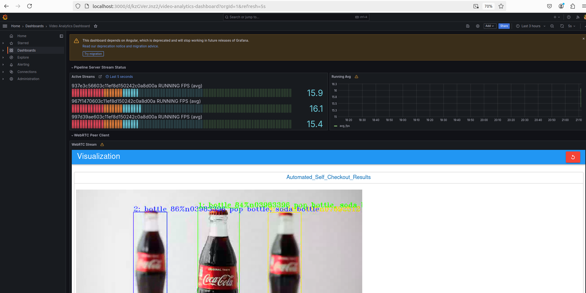
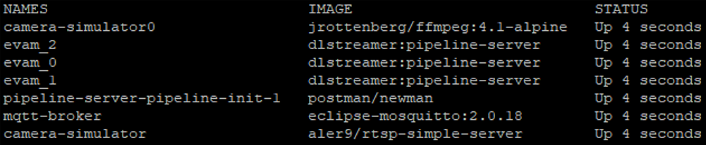

Getting Started Guide
- Time to Complete: 30 minutes
- Programming Language: Python3, Bash
Prerequisites for Target System
- Intel® Core™ processor
- At least 16 GB RAM
- At least 64 GB hard drive
- An Internet connection
- Docker*
- Docker Compose* v2 (Optional)
- Git*
- Ubuntu* LTS Boot Device
If Ubuntu is not installed on the target system, follow the instructions and install Ubuntu.
Install Automated Self-Checkout Package Software
Do the following to install the software package:
-
Download the reference implementation package: Automated Self-Checkout Retail Reference Implementation.
-
Open a new terminal and navigate to the download folder to unzip the
automated-self-checkoutpackage:unzip automated-self-checkout.zip -
Navigate to the
automated-self-checkout/directory:cd automated-self-checkout -
Change permission of the executable edgesoftware file:
chmod 755 edgesoftware -
Install the package:
./edgesoftware install -
You will be prompted for the Product Key during the installation. The Product Key is in the email you received from Intel confirming your download.
When the installation is complete, you will see the message “Installation of package complete” and the installation status for each module.

If the installation fails because of proxy-related issues, follow the troubleshooting steps.
Run and Evaluate Pre-Configured Pipelines
In a retail environment, self-checkout solutions analyze video streams from multiple cameras to streamline the checkout process. The system detects and classifies products as items are scanned. Barcode and text recognition ensure accuracy. This data is processed to verify purchases and update inventory in real time. Factors such as latency and frames per second (FPS) help assess the automated self-checkout solution's real-time responsiveness and efficiency.
This demonstration shows how to run the pre-configured pipeline, view a simulation that detects and tracks objects, and check the pipeline's status.
Step 1: Run Pipeline
Do the following to run the pre-configured pipeline:
-
Navigate to the
automated-self-checkoutdirectory:cd automated-self-checkout -
Modify the following host IP addresses to match the IP address of the system running the reference implementation:
HOST_IPandRSTP_CAMERA_IPin thesrc/pipeline-server/.envfile.host_ipin thesrc/pipeline-server/postman/env.jsonfile.
-
Run the pipeline server:
make run-pipeline-serverThe containers will start to run.

Step 2: Launch Grafana Dashboard
Do the following to launch the Grafana* dashboard to view the objects being detected and tracked:
-
Open a web browser and enter the following URL to access the Grafana dashboard:
http://<target_system_IP>:3000.To get
<target_system_IP>, run thehostname -Icommand. -
When prompted, provide the following credentials:
- Username:
root - Password:
evam123
- Username:
-
On the dashboard, go to Menu > Home, and select Video Analytics Dashboard.
The dashboard visualizes the object detection and tracking pipelines. The bounding boxes around the products indicate their detection and tracking. The dashboard also shows the active streams and their corresponding average FPS.

Step 3: Check Pipeline Status
Do the following to check the metrics:
-
Check whether the docker containers are running:
docker ps --format 'table{{.Names}}\t{{.Image}}\t{{.Status}}' -
Check the MQTT inference output:
mosquitto_sub -v -h localhost -p 1883 -t 'AnalyticsData0' mosquitto_sub -v -h localhost -p 1883 -t 'AnalyticsData1' mosquitto_sub -v -h localhost -p 1883 -t 'AnalyticsData2'Here is the result for
AnalyticsData0:AnalyticsData0 {"objects":[{"detection":{"bounding_box":{"x_max":0.3163176067521043,"x_min":0.20249048400491532,"y_max":0.7995593662281202,"y_min":0.12237883070032396},"confidence":0.868196964263916,"label":"bottle","label_id":39},"h":731,"region_id":6199,"roi_type":"bottle","w":219,"x":389,"y":132},{"detection":{"bounding_box":{"x_max":0.7833052431819754,"x_min":0.6710088227893136,"y_max":0.810283140877349,"y_min":0.1329853767638305},"confidence":0.8499506711959839,"label":"bottle","label_id":39},"h":731,"region_id":6200,"roi_type":"bottle","w":216,"x":1288,"y":144}],"resolution":{"height":1080,"width":1920},"tags":{},"timestamp":67297301635} AnalyticsData0 {"objects":[{"detection":{"bounding_box":{"x_max":0.3163306922646063,"x_min":0.20249845268772138,"y_max":0.7984013488063937,"y_min":0.12254781445953},"confidence":0.8666459321975708,"label":"bottle","label_id":39},"h":730,"region_id":6201,"roi_type":"bottle","w":219,"x":389,"y":132},{"detection":{"bounding_box":{"x_max":0.7850104587729607,"x_min":0.6687324296210857,"y_max":0.7971464600783804,"y_min":0.13681757042794374},"confidence":0.8462932109832764,"label":"bottle","label_id":39},"h":713,"region_id":6202,"roi_type":"bottle","w":223,"x":1284,"y":148}],"resolution":{"height":1080,"width":1920},"tags":{},"timestamp":67330637174} -
Check the pipeline status:
The pipeline status should be like:./src/pipeline-server/status.sh--------------------- Pipeline Status --------------------- ----------------8080---------------- [ { "avg_fps": 11.862402507697258, "avg_pipeline_latency": 0.5888091060475129, "elapsed_time": 268.07383918762207, "id": "95204aba458211efa9080242ac180006", "message": "", "start_time": 1721361269.6349292, "state": "RUNNING" } ]The pipeline status displays the average FPS and average pipeline latency, among other metrics.
-
Stop the services:
make down-pipeline-server
Summary
In this get started guide, you learned how to:
- Install the automated self-checkout package software.
- Verify the installation.
- Run pre-configured pipelines, visualize object detection and tracking, and extract data from them.
Learn More
- To apply custom environment variables, see Advanced Settings.
- To evaluate the pipeline system performance across different hardware, see Test Performance.
Troubleshooting
Issues with Docker Installation
If you are behind a proxy and if you experience connectivity issues, the Docker installation might fail. Do the following to install Docker manually:
- Install Docker from a package.
- Complete the post-installation steps to manage Docker as a non-root user.
- Configure the Docker CLI to use proxies.
Error Logs
To access the Docker Logs for EVAM server 0, run the following command:
docker logs evam_0
{"levelname": "INFO", "asctime": "2024-07-31 23:26:47,257", "message": "===========================", "module": "pipeline_manager"}
{"levelname": "INFO", "asctime": "2024-07-31 23:26:47,257", "message": "Completed Loading Pipelines", "module": "pipeline_manager"}
{"levelname": "INFO", "asctime": "2024-07-31 23:26:47,257", "message": "===========================", "module": "pipeline_manager"}
{"levelname": "INFO", "asctime": "2024-07-31 23:26:47,330", "message": "Starting Tornado Server on port: 8080", "module": "__main__"}
{"levelname": "INFO", "asctime": "2024-07-31 23:26:51,177", "message": "Creating Instance of Pipeline detection/yolov5", "module": "pipeline_manager"}
{"levelname": "INFO", "asctime": "2024-07-31 23:26:51,180", "message": "Gstreamer RTSP Server Started on port: 8555", "module": "gstreamer_rtsp_server"}
{"levelname": "ERROR", "asctime": "2024-07-31 23:26:51,200", "message": "Error on Pipeline 5d5b3b0a4f9411efb60d0242ac120007: gst-resource-error-quark: Could not open resource for reading. (5): ../gst/rtsp/gstrtspsrc.c(6427): gst_rtspsrc_setup_auth (): /GstPipeline:pipeline3/GstURISourceBin:source/GstRTSPSrc:rtspsrc0:\nNo supported authentication protocol was found", "module": "gstreamer_pipeline"}
Known Issues
For the list of known issues, see known issues.